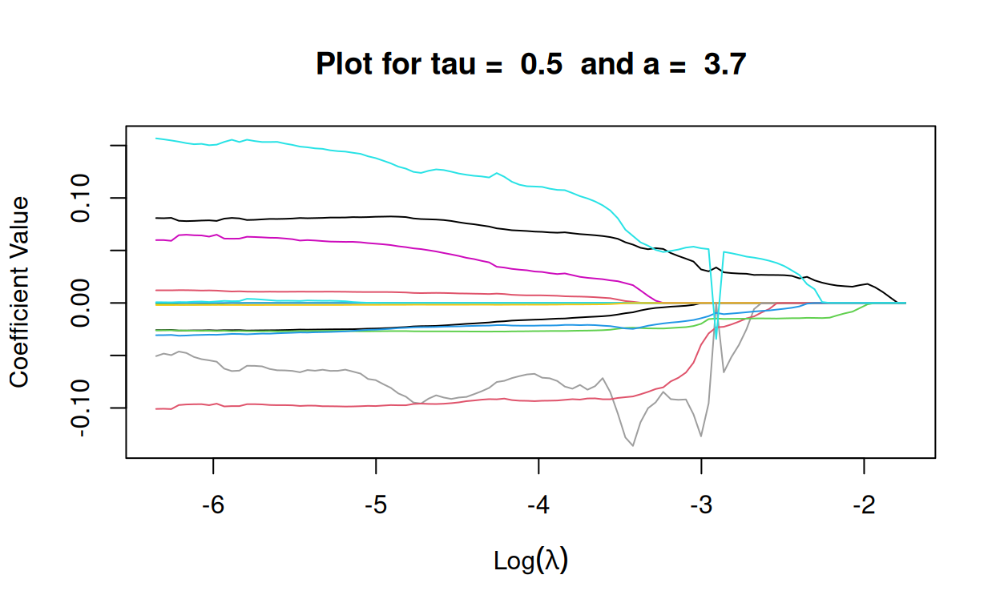
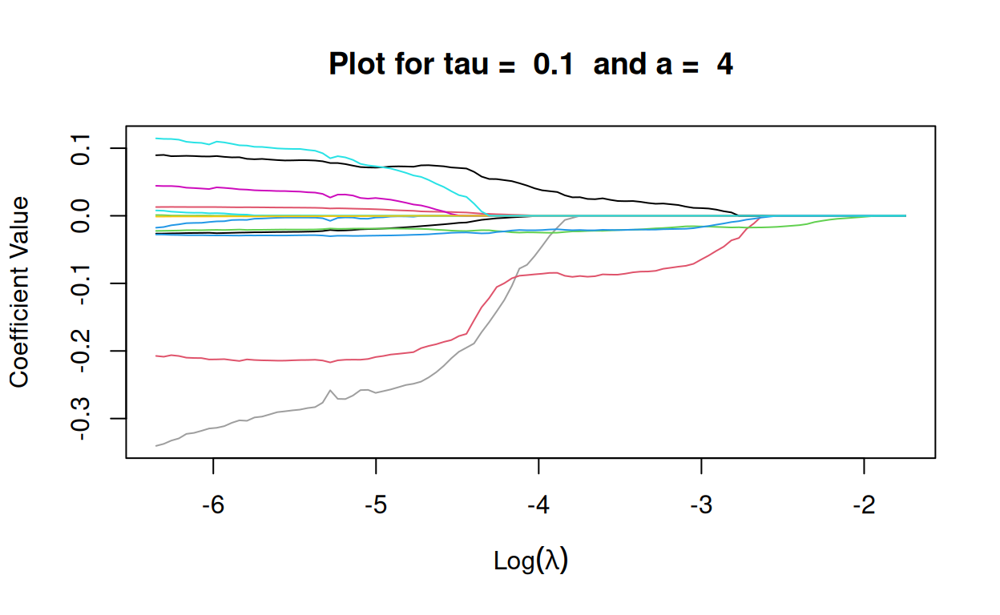
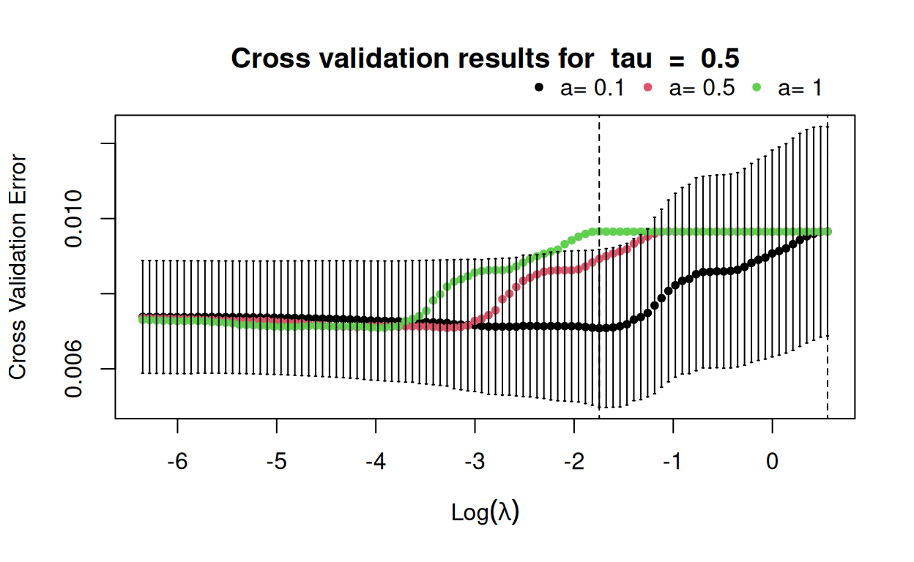
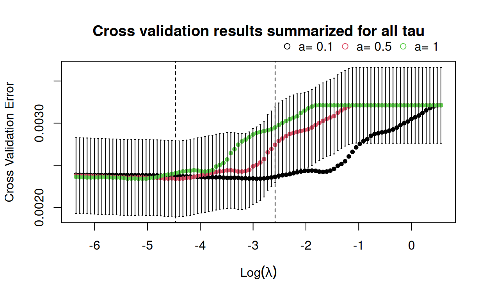
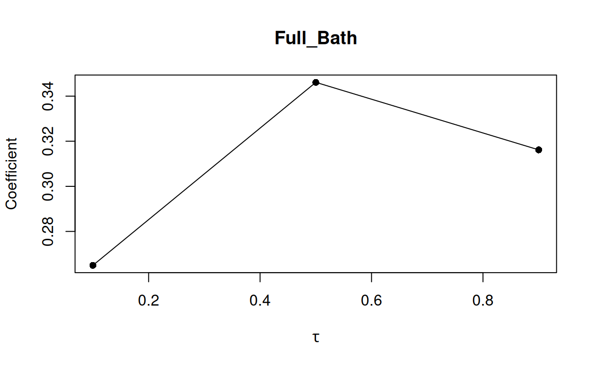

1 Introduction
The package rqPen allows users to model conditional quantiles using a penalized quantile regression approach. It supports a wide range of penalties and includes cross-validation and information criterion approaches for selecting tuning parameters. Koenker and Bassett (1978) proposed quantile regression as a robust alternative to mean regression that directly models a conditional quantile of interest without the need for assumptions about the distribution or moment conditions for the error term. Since Tibshirani (1996) introduced the lasso penalty, investigating the combination of different penalties and loss functions has been an active area of interest. Penalties provided in rqPen are lasso, elastic net (Zou and Hastie 2005), SCAD (Fan and Li 2001), MCP (Zhang 2010), adaptive lasso (Zou 2006), group lasso (Yuan and Lin 2005), group extensions of adaptive lasso, SCAD, and MCP (Wang et al. 2007; Breheny and Huang 2009; Huang et al. 2012), and a group lasso penalty where variables are grouped across quantiles (Wang et al. 2024). Extending the theoretical results of penalized estimators to the quantile regression setting has been an active area of research. Examples include deriving the rate of convergence for lasso (Belloni and Chernozhukov 2011) and group lasso (Kato 2012) and deriving oracle properties for non-convex penalties such as SCAD and MCP (Wang et al. 2012). Discussed in these papers is how minimizing the penalized objective functions for quantile regression can be framed as linear programming problems or, in the case of group lasso, second-order cone programming problems. The linear programming formulation is particularly familiar to researchers in quantile regression because this is the most common approach for solving quantile regression problems, including in the quantreg package (Koenker and D’Orey 1987; Koenker and D’Orey 1994), while a second-order cone programming problem can be solved using convex optimization software, including the R package Rmosek (Koenker and Mizera 2014).
The ability to analyze large data sets is one of the major appeals of penalized regression methods. However, linear programming and second-order cone programming algorithms become computationally burdensome for large data sets. Further complicating matters is that the quantile loss function is non-differentiable, while popular algorithms for penalized objective functions rely on a differentiable loss function, for instance, Friedman et al. (2010) (elastic net), Breheny and Huang (2011) (non-convex penalties), Breheny and Huang (2015) (group non-convex penalties), and Yang and Zou (2015) (group lasso). Yi and Huang (2017) proposed using a Huber-type approximation of the quantile loss and coordinate descent algorithm for solving elastic net penalized quantile regression which is implemented in the R package hqreg. Assuming a good initial estimator is provided, Peng and Wang (2015) proposed a coordinate descent algorithm (QICD) for non-convex penalties. The R package conquer approximates the quantile loss with a convolution of the quantile loss and Kernel function (Tan et al. 2022; He et al. 2023).
The package rqPen provides an implementation of the Huber-type approximation and linear programming algorithms. It allows users to fit quantile regression models with all of the penalty functions discussed in the first paragraph and provides tools for using cross-validation or information criterion to select tuning parameters. In addition, it provides plots for comparing cross-validation results and coefficient estimates as the sparsity parameter, \(\lambda\), changes. The package allows for estimating multiple quantiles with a call to a single function and provides plots of how coefficient values change with the different quantiles being modeled.
The packages quantreg, conquer, hrqglas, and hqreg are alternatives for penalized quantile regression in R. However, there are some substantial differences between rqPen and these packages. The package rqPen allows users to fit quantile regression models using the elastic net, SCAD, MCP, adaptive lasso, group lasso, group SCAD, group MCP and group adaptive lasso penalties, along with allowing users to choose between an \(L_1\) or \(L_2\) norm for all group penalties. In addition, users can fit models for multiple quantiles, use cross-validation or information criterion (IC) approaches to choose tuning parameters, and create plots of the change in coefficient estimates for different quantiles and tuning parameters. Also, commonly used functions such as predict(), coef(), and plot() can be used with the rq.pen.seq and rq.pen.seq.cv objects created by rqPen functions. The package quantreg fits unpenalized quantile regression models and provides the SCAD and lasso penalty. For both penalized and unpenalized quantile regression, conquer offers computationally efficient estimation for large \(n\) or \(p\) data sets. Users of conquer can choose between lasso, elastic net, group lasso, sparse-group (Simon et al. 2013), group SCAD and group MCP. To the best of our knowledge, conquer is the only package that offers the sparse-group lasso penalty for quantile regression. While hrqglas provides penalized group lasso, it does not provide any of the other group penalties, nor does it allow for simultaneous estimation of multiple quantiles. Similarly, hqreg provides the elastic net penalty using the Huber approximation, but not adaptive lasso, SCAD or MCP. However, hrqglas and hqreg provide methods for robust mean regression using the Huber loss function, something rqPen does not do. Both packages are required for rqPen and provide the backbone for the algorithms that use a Huber approximation for the group, hrqglas, and non-group, hqreg, penalties. The package rqPen provides a variety of algorithms and penalty functions that users can choose from. In addition, it provides tools not available in other penalized quantile regression packages, such as plots of how coefficients change with the quantile being modeled or the sparsity parameter, allowing for multiple estimates of quantiles in a single line of code, and functions for information criterion based approaches to tuning parameter selection. Finally, it provides a penalty that guarantees consistent variable selection across quantiles, an option not available in the other packages mentioned.
2 Penalized estimation of quantile regression
Consider observations \(\{y_i,{\bf x}_i\}_{i=1}^n\), where \({\bf x}_i = (1,x_{i1},\ldots,x_{ip})^\top \in \mathbb{R}^{p+1}\), and the model \[\begin{equation} y_i = {\bf x}_i^\top {\boldsymbol\beta}^{\tau}_0 + \epsilon_i, \tag{1} \end{equation}\] where \(P(\epsilon_i < 0 | {\bf x}_i)=\tau\). Define \(\rho_\tau(u) = u[\tau-I(u<0)]\), Koenker and Bassett (1978) proposed estimating (1) by minimizing \[\begin{equation} \sum_{i=1}^n \rho_\tau(y_i-{\bf x}_i^\top\boldsymbol \beta), \tag{2} \end{equation}\] which is available in the package quantreg. Let \(m_i\) be the weight for observation \(i\), \(\boldsymbol w\) be a vector of weights for a predictor or group of predictors, and \(\lambda\) and \(a\) are penalty tuning parameters. The package rqPen provides functions for estimating \(\boldsymbol \beta^\tau_0\) by minimizing \[\begin{equation} \frac{1}{n} \sum_{i=1}^n m_i \rho_\tau(y_i - {\bf x}_i^\top\boldsymbol \beta) + P_{\boldsymbol w,\lambda,a}(\boldsymbol \beta), \tag{3} \end{equation}\] where \(\lambda>0\) and the plausible values of \(a\) depend on the penalty being used. The penalty function \(P_{\lambda,a}(\boldsymbol \beta)\) can take the form of a group or individual penalty.
Let \(w_j\) be a weight for a variable \(j\). For an individual penalty, (3) has the form of \[\begin{equation} \frac{1}{n} \sum_{i=1}^n m_i \rho_\tau(y_i - {\bf x}_i^\top\boldsymbol \beta) + \sum_{j=1}^p p_{w_j\lambda,a}(|\beta_j|). \tag{4} \end{equation}\]
The package rqPen supports four different forms of individual penalties: elastic net, adaptive lasso, SCAD and MCP. Users can also specify ridge and lasso, which are special cases of the elastic net. The SCAD, \(p^s_{\lambda,a}()\), and MCP, \(p^m_{\lambda,a}()\) penalty functions are \[\begin{eqnarray*} p^s_{\lambda,a}(|x|) &=& \lambda|x|I(0 \leq |x| < \lambda) + \frac{a\lambda|x|-(x^2+\lambda^2)/2}{a-1}I(\lambda \leq |x| \leq a\lambda) + \frac{(a+1)\lambda^2}{2}I(|x|>a\lambda), \\ p^m_{\lambda,a}(|x|) &=& \lambda\left(|x|-\frac{x^2}{2a\lambda}\right)I(0 \leq |x| < a\lambda) + \frac{a\lambda^2}{2}I(|x|\geq a\lambda), \end{eqnarray*}\] where \(a>2\) for the SCAD penalty function and \(a>1\) for MCP.
The following defines \(P_{\lambda,a}(\boldsymbol \beta)\) for the four different penalty functions, plus two important special cases.
The weights, \(w_j\), allow for different weights for predictors and must be non-negative. If \(w_j=0\) then that variable will be unpenalized. In rqPen these weights are labeled as penalty.factors or group.penalty.factors. The lasso estimator provides the backbone for the algorithm of the three non-elastic net penalties. As \(\rho_\tau(x)+\rho_\tau(-x) = |x|\), the lasso estimator minimizes,
\[\begin{equation}
\frac{1}{n} \sum_{i=1}^n m_i \rho_\tau(y_i - {\bf x}_i^\top\boldsymbol \beta) + \sum_{j=1}^p \rho_\tau(\lambda w_j\beta_j)+\rho_\tau(-\lambda w_j\beta_j).
\tag{5}
\end{equation}\]
For \(i \in \{1,\ldots,n\}\) define \(\tilde{y}_i = y_i\), \(\tilde{{\bf x}}_i = {\bf x}_i\), and \(\tilde{m}_i = m_i\). Let \({\bf e}_j \in \mathbb{R}^{p+1}\) represent a unit vector with a value of one in the \(j\)th position and zero in all other entries. For each \(j \in \{1,\ldots,p\}\) define \(\tilde{{\bf x}}_{n+2j-1} = -n\lambda w_j {\bf e}_j\) and \(\tilde{{\bf x}}_{n+2j} = n\lambda w_j {\bf e}_j\). In addition, for each \(i \in \{n+1,\ldots,n+2p\}\) define \(\tilde{y}_i = 0\) and \(\tilde{m}_i=1\). Then minimizing (5) is equivalent to minimizing
\[\begin{equation}
\frac{1}{n} \sum_{i=1}^{n+2p} \tilde{m}_i \rho_\tau(\tilde{y}_i-\tilde{{\bf x}}_i^\top\boldsymbol \beta).
\tag{6}
\end{equation}\]
The objective function (6) has the same form as (2) except for the scaling factor, \(n^{-1}\), and the weights. This approach of creating the augmented \(2p\) samples and then using standard quantile regression is implemented in rqPen where the problem is solved using the rq() function from quantreg. Note this approach is different from using rq(method="lasso",...) within quantreg, which uses a linear programming approach but does not formulate the problem using augmented data.
For large values of \(n\) and \(p\) the linear programming algorithms become computationally burdensome. To decrease computational complexity, Yi and Huang (2017) proposed approximating the quantile loss function with a Huber-like function and a new coordinate descent algorithm that requires a differentiable loss function. The Huber loss function proposed by Huber (1964) is
\[
h_\gamma(t) = \frac{t^2}{2\gamma}I(|t| \leq \gamma)+\left[|t|-\frac{\gamma}{2}\right]I(|t|>\gamma).
\]
Note \(\rho_\tau(u) = u[\tau-I(u<0)]=\frac{1}{2}(|u|+(2\tau-1)u)\) and for sufficiently small \(\gamma\), \(|u| \approx h_\gamma(u)\). The Huber-approximated quantile loss is
\[\begin{equation}
h_{\gamma}^{\tau}(u) = h_\gamma(u) + (2\tau-1)u,
\tag{7}
\end{equation}\]
and for small \(\gamma\), \(\rho_\tau(u) \approx \frac{1}{2}h_{\gamma}^{\tau}(u)\). The package hqreg implements the approach of Yi and Huang (2017) and the function hqreg(), with method="quantile", solves the problem of
\[\begin{equation}
\frac{1}{2n} \sum_{i=1}^n h_{\gamma}^{\tau}(y_i - {\bf x}_i^\top\boldsymbol \beta) + \lambda \sum_{j=1}^p w_j|\beta_j|.
\tag{8}
\end{equation}\]
In rqPen, solving (8) is done by calling hqreg::hqreg() and thus hqreg is a required package. The Huber approximation with lasso is the default for rq.pen(), one of the main functions in rqPen. In addition, optimization of the adaptive lasso, SCAD and MCP problems can be solved using a version of (8), which is available in rqPen but not hqreg. The adaptive lasso can be solved using the same approach because it is a special case of a lasso problem with different weights for each coefficient. The initial estimators necessary for the weights are determined by a ridge estimator with the same value of \(\lambda\). The SCAD and MCP functions are approximated by a local linear approximation (LLA) as proposed by Zou and Li (2008). Let \(p_{w_j\lambda,a}(|\beta_j|)\) represent a generic penalty function and \(p'_{w_j\lambda,a}(|\beta_j|)\) be the derivative with respect to \(\beta_j\). Let \(\bar{\beta}_j\) be the lasso estimator for the same value of \(\lambda\) and weights. The LLA approach uses the following approximation,
\[\begin{align}
\frac{1}{n} \sum_{i=1}^n m_i \rho_\tau(y_i-{\bf x}_i^\top\boldsymbol \beta) + & \sum_{j=1}^p p_{w_j\lambda,a}(|\beta_j|) \nonumber \\
& \approx \frac{1}{n} \sum_{i=1}^n m_i \rho_\tau(y_i-{\bf x}_i^\top\boldsymbol \beta) + \sum_{j=1}^p p'_{w_j\lambda,a}(|\bar{\beta}_j|)|\beta_j|.
\tag{9}
\end{align}\]
Again, the problem becomes a special case of a lasso estimator with specific weights for each predictor. Thus all the non-group penalties, except for elastic net and ridge, can be solved using linear programming or Huber approximation algorithms.
The elastic net penalty of
\[\begin{equation}
\frac{1}{n} \sum_{i=1}^n m_i \rho_\tau(y_i - {\bf x}_i^\top\boldsymbol \beta) + \lambda \sum_{j=1}^p w_j \left[ a|\beta_j|+(1-a)\beta_j^2\right],
\tag{10}
\end{equation}\]
cannot be framed as a linear programming problem because of the ridge penalty. Thus for \(a \neq 1\), the rqPen implementation of elastic net only uses the Huber approximation approach provided in hqreg. While hqreg provides a computational backbone, rqPen provides SCAD, MCP, and adaptive lasso penalties that are not provided in hqreg(). In addition, hqreg() does not include any group penalties or allow for weights for observations, \(m_i\). If weights are specified then the group lasso with singleton groups, implemented in hrqglas, is used instead of using hqreg() from hqreg.
2.1 Group Penalty predictors
When there exists a group structure to the predictors then a group penalty can often account for this structure. For instance, non-binary categorical variables or polynomial transformations of predictors. This section assumes the \(p\) predictors are partitioned into \(G\) groups and \(\boldsymbol \beta_g\) represents the coefficients associated with the \(g\)th group of predictors. Group penalized quantile regression estimators minimize \[\begin{equation} \frac{1}{n} \sum_{i=1}^n m_i \rho_\tau(y_i - {\bf x}_i^\top\boldsymbol \beta) + \sum_{g=1}^G p_{w_g\lambda,a}(||\boldsymbol \beta_g||_q). \tag{11} \end{equation}\]
Users can choose four penalty functions for \(p_{w_g,\lambda,a}()\): (1) lasso; (2) Adaptive lasso; (3) SCAD; and (4) MCP. Specifically,
The values of \(q\) in rq.group.pen() is limited to \(q \in \{1,2\}\) and can be changed with norm=q. If \(q=2\) then group variable selection will be all-or-nothing, that is all variables within a group will be selected or none of them will be. The choice of \(q=1\) allows for bi-level variable selection (Breheny and Huang 2009). Users cannot specify norm=1 and penalty="gLASSO", default penalty of group lasso, because that is equivalent to the individual lasso penalty implemented in rq.pen().
Huang et al. (2012) provide an excellent review of group penalties, including a discussion of the use of \(q=1\). For differentiable loss functions, Breheny and Huang (2009) provide a computational perspective on \(q=1\), while Sherwood et al. (2020) compare oracle model selection properties for \(q=1\) and \(q=2\).
For \(q=1\), the group lasso estimator becomes a special case of the individual lasso estimator, and this is also true for the adaptive lasso penalty. For the SCAD and MCP penalties, LLA will be used to approximate the non-convex penalties. Let \(\bar{\boldsymbol \beta}_g\) be an initial group lasso estimator and the penalized objective function is approximated by \[\begin{equation} \frac{1}{n} \sum_{i=1}^n m_i \rho_\tau(y_i - {\bf x}_i^\top\boldsymbol \beta) + \sum_{g=1}^G p'_{w_g\lambda,a}(||\bar{\boldsymbol \beta}_g||_q)||\boldsymbol \beta_g||_q. \tag{12} \end{equation}\]
Thus for the case of \(q=1\) this becomes an individual lasso problem and the algorithms discussed in the previous section apply. In particular, the problem can be framed as a linear programming problem. While for \(q=2\) (12) becomes a special case of the group lasso problem. These group lasso problems are not linear programming problems, but second-order cone programming problems. Second-order cone programming problems can be solved by existing convex optimization software such as Rmosek (Koenker and Mizera 2014). However, there are some barriers to using Rmosek, for instance it requires a copy of Mosek installed on the user’s computer. In addition, similar to linear programming problems, second-order cone programming algorithms can be computationally burdensome for large values of \(n\) or \(p\). For \(q=2\), the Huber approximation described in the previous subsection is used. However, hqreg cannot be used to solve this problem because the approach of Yi and Huang (2017) is not for a group penalty. Instead, the algorithm of Yang and Zou (2015) is implemented. See Sherwood and Li (2022) for details regarding the application of this algorithm to the asymmetric Huber regression setting. This approach is available in the package hrqglas, which is maintained by two of the authors and provides the computational backbone for the \(L_2\) group penalties.
2.2 Estimation of Multiple Quantiles
For a set of quantiles of interest, \((\tau_1,\ldots,\tau_B)\), Belloni and Chernozhukov (2011) proposed minimizing, \[\begin{equation} \frac{1}{n} \sum_{b=1}^B\sum_{i=1}^n m_i \rho_{\tau_b}\left(y_i - {\bf x}_i^\top\boldsymbol \beta^{\tau_b}\right) + \frac{\tilde{\lambda}}{n} \sum_{b=1}^B\sum_{j=1}^p \sqrt{\tau_b(1-\tau_b)} \hat{\sigma}_j |\beta^{\tau_b}_j|, \tag{13} \end{equation}\] where \(\hat{\sigma}_j = n^{-1}\sum_{i=1}^n x_{ij}^2\). We use \(\tilde{\lambda}\) in (13) to emphasize that the scaling of the tuning parameter is different than that used in rqPen, specifically \(\lambda=\frac{\tilde{\lambda}}{n}\). The penalized objective function of (13) provides a quantile specific weight of \(\sqrt{\tau_b(1-\tau_b)}\) and a predictor specific weight of \(\hat{\sigma}_j\), while \(\lambda\) is assumed to have the same value. In rqPen, this approach is generalized to allow for different penalties and user choices of the quantile, predictor, and observation weights. For an individual penalty the estimator minimizes, \[\begin{equation} \frac{1}{n} \sum_{b=1}^B\sum_{i=1}^n m_i \rho_{\tau_b}\left(y_i - {\bf x}_i^\top\boldsymbol \beta^{\tau_b}\right) + \sum_{b=1}^B\sum_{j=1}^p p_{w_jd_b\lambda,a}(|\beta^{\tau_b}_j|). \tag{14} \end{equation}\] For a group penalty the penalized objective function is \[\begin{equation} \frac{1}{n} \sum_{b=1}^B \sum_{i=1}^n m_i \rho_{\tau_b}\left(y_i - {\bf x}_i^\top\boldsymbol \beta^{\tau_b}\right) + \sum_{b=1}^B \sum_{g=1}^G p_{w_gd_b\lambda,a}(||\boldsymbol \beta_g||_q). \tag{15} \end{equation}\] Note, the \(w_jd_b\lambda\) term allows users to specify specific weights for a predictor, \(w_j\), and specific weights for a quantile, \(d_b\). For instance, if a user chooses the lasso penalty with \(w_j=n^{-1}\sum_{i=1}^nx_{ij}^2\), \(d_b=n^{-1}\sqrt{\tau_b(1-\tau_b)}\), and \(m_i=1\) then (14) is equivalent to (13). The optimization of (14) and (15) consist of \(B\) different optimization problems. In rqPen they are solved separately using the algorithms that have been discussed previously, except the same sequence of \(\lambda\) is used for all \(B\) problems. In Belloni and Chernozhukov (2011) they suggest choosing the same value of \(\lambda\) for all the quantiles, albeit with the quantile-specific weights. We later present how users can choose a single value of \(\lambda\) and coefficient estimates come from either (14) or (15). Alternatively, users can choose \(B\) different values of \(\lambda\) and then the solutions come from \(B\) different optimizations of (4) or (11). The latter approach is equivalent to a data-driven approach for estimating the optimal quantile-specific weights, \(d_b\).
Consistent selection across quantiles
The penalties discussed previously do not ensure consistent selection across the quantiles. That is for two quantiles \(\tau_1\) and \(\tau_2\), it is possible for a variable’s coefficient to be non-zero at \(\tau_1\), but zero at \(\tau_2\). Our opinion is this is often hard to interpret. Consider the case where \(B\) quantiles are considered. Define, \(\boldsymbol \beta^j = (\beta_{j}^{\tau_1},\ldots,\beta^{\tau_B}_j)^\top \in \mathbb{R}^{B}\) as the vector of the \(j\)th coefficient for all \(B\) quantiles. Define \(||\boldsymbol \beta^j||_{2,\boldsymbol w,\boldsymbol d}=\sqrt{\sum_{b=1}^B d_b w_j (\beta^{\tau_b}_{j})^2}\), as weighted \(L_2\)-norm that allows for predictor, \(m_j\), and quantile, \(w_k\), specific weights. If a user desires consistent variable selection across quantiles they can use the group quantile penalized objective function, \[\begin{equation} \frac{1}{n} \sum_{b=1}^B \sum_{i=1}^n m_i \rho_{\tau_b}\left(y_i - {\bf x}_i^\top\boldsymbol \beta^{\tau_b}\right) + \lambda \sum_{j=1}^p ||\boldsymbol \beta^j||_{2,\boldsymbol w,\boldsymbol d}. \tag{16} \end{equation}\]
We refer to this penalty as the group quantile penalty (Li and Sherwood 2025).
2.3 Tuning parameter selection
There are two tuning parameters, \(\lambda\) and \(a\), that need to be set. The value of \(a\) defaults to commonly used values for each penalty: (1) elastic-net (\(a=1\)); (2) adaptive lasso (\(a=1\)); (3) SCAD (\(a=3.7\)); and (4) MCP (\(a=3\)). Users can also specify values of \(a\), except for the cases of Ridge (\(a=0\)) and lasso (\(a=1\)) where the value of \(a\) is fixed. Typically the value of \(a\) is not as much of a concern as the value of \(\lambda\), a potential notable exception to this would be the elastic net penalty. Users can specify a sequence for values of \(\lambda\) otherwise, a sequence will be automatically generated. Define \(H_\gamma^\tau(\boldsymbol \beta) = \frac{1}{2n} \sum_{i=1}^n m_i h_\gamma^\tau(y_i - {\bf x}_i^\top\boldsymbol \beta)\). Define \(\tilde{a}=a\) if the elastic net penalty is used and one otherwise. If \(a=0\), that is the ridge penalty is being used, then \(\tilde{a}=.001\). The default value for an individual penalty is \(\lambda_{\max} = \max_{j,b} 1.05\left|\frac{\partial}{\partial \beta_j} H_\gamma^{\tau_b}(\mathbf{0}_{p+1})\right|(w_jd_b\tilde{a})^{-1}\) and for a group penalty is \(\lambda_{\max} = \max_{g,b} 1.05\left|\left| \frac{\partial}{\partial \boldsymbol \beta_g} H_\gamma^{\tau_b}(\mathbf{0}_{p+1})\right|\right|_q (w_gd_b)^{-1}\). The 1.05 multiplier is used to ensure that \(\lambda_{\max}\) provides a completely sparse solution regardless of whether the Huber approximation is used or not. If any predictors or groups are unpenalized at a given quantile then they are excluded from these calculations.
Both cross-validation and information criterion are provided as tools for selecting the optimal pair of \((\lambda,a)\). Let \(\hat{\boldsymbol \beta}^\tau_{\lambda,a}\) be the coefficient estimates for quantile \(\tau\) using tuning parameters \(\lambda\) and \(a\). Define \(k^\tau_{\lambda,a}\) as the number of non-zero coefficients in \(\hat{\beta}_{\lambda,a}^\tau\). The quantile information criterion (QIC) is defined as \[\begin{equation} QIC(\tau,\lambda,a) = \log\left[ \sum_{i=1}^n m_i \rho_\tau(y_i-{\bf x}_i^\top \hat{\boldsymbol \beta}^\tau_{\lambda,a}) \right] + \frac{mk^\tau_{\lambda,a}}{2n}, \tag{17} \end{equation}\] where the value of \(m\) depends on the criterion being used. Users can select between AIC (\(m=2\)), BIC [\(m=\log(n)\)], and a version of the large \(p\) BIC proposed by Lee et al. (2014, \(m=\log(n)\log(p)\)).
Cross-validation is the other approach implemented for choosing the optimal pair of \((\lambda,a)\). Consider the case of \(K\) folds, let \(n_k\) be the number of observations in the \(k\)th fold, \(y_i^k\), \({\bf x}_i^k\), and \(m_i^k\) be the \(i\)th response, predictor vector, and weights for the \(k\)th fold and \(\hat{\boldsymbol \beta}^{\tau_b}_{-k,\lambda,a}\) be the fit for the \(b\)th quantile excluding the \(k\)th fold for given values of \(\lambda\) and \(a\). By default, even if Huber approximations are used, cross-validation is done using quantile loss. However, this can be changed by setting cvFunc in the later described functions rq.group.pen.cv(), rq.gq.pen.cv(), or rq.pen.cv(). For instance, cvFunc=abs will use absolute value loss regardless of the quantile being modeled. For simplicity of presentation, the following assumes quantile loss is used. The average quantile loss at a given fold is
\[\begin{equation}
C_k^\tau(\lambda,a) = \frac{1}{n_k} \sum_{i=1}^{n_k} m_i^k \rho_\tau(y_i^k-{{\bf x}_i^k}^\top\hat{\boldsymbol \beta}^{\tau}_{-k,\lambda,a}).
\tag{18}
\end{equation}\]
The cross-validation functions return two summaries of the cross-validation for selecting \((\lambda,a)\). The return value btr provides a table of the values of \(a\) and \(\lambda\) that minimize
\[\begin{equation}
C^\tau(\lambda,a) = \frac{1}{K} \sum_{k=1}^K C_k^\tau(\lambda,a).
\tag{19}
\end{equation}\]
In addition it provides the \(\lambda\) value associated with the sparsest solution that is within one standard error of the value that minimizes (19). The standard error for a given pair of \((\lambda,a)\) is calculated as
\[\begin{equation}
\sqrt{\frac{1}{K-1} \sum_{k=1}^K \left[C_k^\tau(\lambda,a)-C^\tau(\lambda,a) \right]^2}.
\end{equation}\]
The average summary can be replaced by changing the parameter cvSummary. For instance, cvSummary=median would use the median values of \(C_k^\tau(\lambda,a)\).
Users can also choose to optimize \(\lambda\) and \(a\), so they are the same values across all quantiles. When evaluating the cross-validation error they can choose to not provide equal weight to each quantile by entering quantile specific weights of \(z_b\). The return value gtr provides results for the value of \(\lambda\) and \(a\) that minimize
\[\begin{equation}
C(\lambda,a) = \sum_{b=1}^B z_b C^{\tau_b}(\lambda,a).
\tag{20}
\end{equation}\]
Users can choose between a single pair of \((\lambda,a)\) that minimizes (20) or \(B\), potentially different, pairs that minimize (19) separately for each quantile except for when minimizing (16). That is a joint optimization problem and thus only joint selection of tuning parameters using (20) is allowed. In addition, results for the one standard error approach, where the standard error for a fixed \((\lambda,a)\) pair is
\[\begin{equation}
\sqrt{\frac{1}{K-1}\sum_{k=1}^K \sum_{b=1}^B z_b \left[C_k^\tau(\lambda,a) -C^\tau(\lambda,a) \right]^2},
\end{equation}\]
are provided. The one standard error rule finds the sparsest solution, by increasing \(\lambda\), where the value of (19) or (20) are within one standard error of the optimal value, assuming the optimal \(a\) is fixed.
By setting groupError=FALSE each observation is weighted equally and (19) and (20) are replaced by \(\sum_{k=1}^K n_k C_k^\tau(\lambda,a)\),
and \(\sum_{b=1}^B z_b \sum_{k=1}^K n_k C_k^\tau(\lambda,a)\), respectively.
Tuning parameter selection for multiple quantiles using an information criterion
For the case of multiple, \(B\), quantiles being modeled, rqPen offers two different approaches for selecting the tuning parameters. One approach is to select \(B\) pairs of \((\lambda,a)\) that minimize the \(B\) different versions of (17). The other approach is given weights \((z_1,\ldots,z_b)\), the optimal pair of \((\lambda,a)\) minimizes, \[\begin{equation} \sum_{b=1}^B z_b QIC(\tau_b,\lambda,a). \tag{21} \end{equation}\] The weights offer flexibility to a user who wants to provide more weight to a specific quantile. The default value for all the weights is one thus giving equal weight to each quantile.
2.4 Additional notes on Huber approximation
For Huber approximation, a value of \(\gamma\) is needed. If \(\gamma\) is too large then the estimator will have a large amount of bias. If \(\gamma\) is too small the algorithms will become unstable. The values of \(\gamma\) are updated for each value of \(\lambda\). Let \({\bf r}^k\) be the vector of residuals corresponding to the estimator using the \(k\)th value of \(\lambda\), \(\lambda^k\), and \(Q_{.1}(|{\bf r}^k|)\) be the 10th percentile of the absolute values of these residuals. For an individual penalty we use what is implemented in hqreg, which is very similar to what is outlined by Yi and Huang (2017). Specifically, \[\begin{eqnarray*} \gamma^k &=& I(|1-\tau|< .05)\max\left\{.0001,\min\left[\gamma^{k-1},Q_{.01}(|{\bf r}^k|)\right]\right\} \\ && + I(|1-\tau|>=.05)\max\left\{.001,\min\left[\gamma^{k-1},Q_{.1}(|{\bf r}^k|)\right]\right\}. \end{eqnarray*}\]
For the group penalties, as presented in Sherwood and Li (2022), \[\begin{equation*} \gamma^k = \min\left\{4, \max\left[.001, Q_{.1}(|{\bf r}^k|) \right] \right\}. \end{equation*}\]
One reason the linear and second-order cone programming problems are computationally slow for larger values of \(p\) is they optimize across all potential predictors. Tibshirani et al. (2012) proposed a strong rule for discarding predictors that can greatly decrease the computational complexity of penalized optimization. The strong rule assumes a differentiable loss function and thus is only implemented for the Huber approximations. In addition, the Huber approximation approaches use warm starts across a path of potential \(\lambda\) values. It starts with the largest potential value of \(\lambda\) then uses that solution as the initial value for the next largest potential value of \(\lambda\). This iterative process is continued until all solutions have been found. The linear programming approaches rely on quantreg::rq() which does not have an option for initial values. Thus warm starts are not implemented for those approaches. For an individual penalty, the calculations of the strong rule are done in the package hqreg, and details can be found in Yi and Huang (2017). A similar approach has been used for group penalties (Sherwood and Li 2022).
3 Description of functions
Below are the main functions of rqPen and an S3 method that is unique to rqPen, bytau.plot().
rq.pen()minimizes (14) to provide estimates of a quantile regression model, for potentially multiple quantiles, using an individual penalty of either elastic-net, adaptive lasso, SCAD, or MCP. If not specified, a sequence of \(\lambda\) values is automatically generated. Returns anrq.pen.seqS3 object that works withbytau.plot(),coef(),plot(),predict(), andprint()methods.rq.gq.pen()minimizes (16) to provide a quantile regression model for multiple quantiles using the group quantile lasso penalty. It also returns anrq.pen.seqS3 object and can be used with the same methods listed above.rq.group.pen()minimizes (15) and is a group penalty version ofrq.pen(). Users have access to group versions of the lasso, adaptive lasso, SCAD, and MCP penalties. The lasso penalty is restricted to the L2-norm. For other penalties, users can choose between the L1- or L2-norm. It also returns anrq.pen.seqS3 object and can be used with the same methods listed above.rq.pen.cv()automates K-folds cross-validation for selecting the tuning parameters \(\lambda\) and \(a\). If \(\lambda\) is left undefined, a sequence of \(\lambda\) values will be automatically generated. For \(a\), the default values described earlier will be used, unless the user specifies a sequence. If multiple quantiles are modeled then it provides the optimal pair of \((\lambda,a)\) for each quantile and the optimal pair across all quantiles. Returns anrq.pen.seq.cvS3 object that works withbytau.plot(),coef(),plot(),predict(), andprint()methods.rq.gq.pen.cv()is the group quantile lasso version ofrq.pen.cv(). It does everything listed above, but for the group quantile penalty. It also returns anrq.pen.seq.cvobject.rq.group.pen.cv()is the group version ofrq.pen.cv(). It does everything listed above, but for group penalties. It also returns anrq.pen.seq.cvobject.qic.select()takes anrq.pen.seqorrq.pen.seq.cvobject and provides the optimal values of \((\lambda,a)\) using an information criterion, as explained in the previous section. It returns a `qic.select’ S3 object that works withcoef(),predict(), andprint()methods.bytau.plot()plots coefficient estimates for each predictor as a function of \(\tau\).
The rq.pen() function provides estimates of conditional quantiles from minimizing a penalized objective function for a sequence of \(\lambda\) values.
rq.pen(x, y, tau = 0.5, lambda = NULL,
penalty = c("LASSO", "Ridge", "ENet", "aLASSO", "SCAD", "MCP"),
a = NULL, nlambda = 100, eps = ifelse(nrow(x) < ncol(x), 0.05, 0.01),
penalty.factor = rep(1, ncol(x)),
alg = ifelse(sum(dim(x)) < 200, "br", "huber"), scalex = TRUE,
tau.penalty.factor = rep(1, length(tau)),
coef.cutoff = 1e-08, max.iter = 10000, converge.eps = 1e-07,
lambda.discard = TRUE, weights=NULL, ...)The function rq.pen() requires a design matrix x and vector of response y. The predictors in the design matrix will be centered to have mean zero and standard deviation one when minimizing the penalized objective function unless scalex is set to FALSE. While the predictors are scaled, the coefficients are returned on the original scale of x. The quantiles modeled are set with tau. Users can choose the penalty function, with the default being lasso. A pre-specified lambda sequence can be set, lambda. If the user does not specify a sequence of \(\lambda\) values then \(\lambda_{min}=\epsilon\lambda_{max}\), where \(\epsilon\) can be set by eps and nlambda is the number of \(\lambda\) values considered. Though very small values of \(\lambda\) may be discarded if the coefficient estimates are not changing much with smaller values of \(\lambda\), unless lambda.discard=FALSE. For non-ridge or non-lasso penalties, a sequence of values can also be selected for a. If a is not set then default values depend on the penalty, elastic-net (\(a=0\)), adaptive lasso (\(a=1\)), SCAD (\(a=3.7\)) and MCP (\(a=3\)). Penalty factors can be set for predictors, penalty.factor, or quantiles, tau.penalty.factor. Observation weights are set using weights. The linear programming algorithms can provide very small, but non-zero estimates, and these coefficients are set to zero if they are below coef.cutoff. The choice of algorithm can be set using alg. Two linear programming algorithms are provided, the Barrodale and Roberts algorithm (br) (Barrodale and Roberts 1974), as described in Koenker and D’Orey (1987) and Koenker and D’Orey (1994), and the Frisch-Newton (fn) approach, described in Portnoy and Koenker (1997). Both approaches rely on implementations in quantreg. Setting rq.pen(alg="huber") uses the approach of Yi and Huang (2017) implemented in hqreg. In addition, they can set the maximum number of iterations, max.iter, or convergence criteria, converge.eps, though these only apply to the ``huber’’ algorithms.
coef.rq.pen.seq(object, tau = NULL, a = NULL, lambda = NULL, modelsIndex = NULL,
lambdaIndex = NULL, ...)Using coef(), users can extract coefficients for specific quantiles, tau, and tuning parameters, a and lambda, from class rq.pen.seq object. Alternatively, they can directly specify the models and lambda values using modelsIndex and lambdaIndex, respectively. If none of these values are set then a matrix of coefficients for all quantiles and tuning parameters will be returned.
coef.rq.pen.seq.cv(object, septau = TRUE, cvmin = TRUE, useDefaults = TRUE,
tau = NULL, ...)With an rq.pen.seq.cv object, the coef() function returns coefficients based on the cross-validation results. If cvmin=TRUE then the tuning parameters associated with the minimum cross-validation error are returned, otherwise the one standard error rule is used. When septau=TRUE then the tuning parameters are optimized individually for each quantile. Users can identify the specific quantiles, tau, they wish to return. The default is to return results for all quantiles. Setting useDefaults=FALSE ignores the cross-validation results and users can use the arguments in coef.rq.pen.seq() to select coefficients. For instance, if useDefaults=FALSE and no other arguments are provided then all coefficients are returned.
Function bytau.plot() has a similar form for the rq.pen.seq and rq.pen.seq.cv objects.
bytau.plot.rq.pen.seq(x, a = NULL, lambda = NULL, lambdaIndex = NULL, ...)bytau.plot.rq.pen.seq.cv(x, septau = TRUE, cvmin = TRUE, useDefaults = TRUE, ...)These functions produce a plot of how coefficients change with quantiles. The arguments in bytau.plot.rq.pen.seq() and bytau.plot.rq.pen.seq.cv() are the same as those covered for coef(), but with one major difference. Only one vector of coefficients can be provided for each quantile. When using an rq.pen.seq object, users must specify a single pair of \((\lambda,a)\). When using an rq.pen.seq.cv object, users can rely on the default tools for selecting coefficients or specify a single pair of \(\lambda\) and \(a\).
Both rq.pen.seq and rq.pen.seq.cv objects have plot() functions. Using plot() with an rq.pen.seq.cv object provides a plot of how the cross-validation error changes with \(\lambda\) for each quantile.
plot.rq.pen.seq.cv(x, septau = TRUE, tau = NULL, logLambda = FALSE, main = NULL, ...)If septau=TRUE then a separate plot is created for each quantile, otherwise one plot is created that combines the cross-validation error across all quantiles. Users can limit the plots to a subset of quantiles, tau. If logLambda=TRUE then the x-axis will be \(\log(\lambda)\). The main text can be set otherwise the main title depends on the name of the variable and the value of septau.
While plot() for an rq.pen.seq object creates a plot of the coefficients as they change with \(\lambda\).
plot.rq.pen.seq(x, vars = NULL, logLambda = TRUE, tau = NULL, a = NULL,
lambda = NULL, modelsIndex = NULL, lambdaIndex = NULL, main = NULL, ...)The plot() function will create a plot for each combination of \(\tau\) and \(a\). Users can specify specific values of tau and a if they only want to consider a subset. They can also limit the values of lambda. Choice of models and \(\lambda\) values can also be done using modelsIndex and lambdaIndex. The main text can be set. If logLambda=TRUE then the \(\lambda\) values are reported on the natural log scale.
4 Applications
This section details how to use individual and group penalties. Different individual penalties and algorithms will be applied to the Barro data set from the quantreg package. In addition, the group quantile penalty is used with the Barro data set. While the group penalties for predictors will be used with the Ames housing data (De Cock 2011) available in AmesHousing.
4.1 The Barro data set
The Barro data set, available in quantreg, contains GDP growth rates and 13 other potential explanatory variables. See Koenker and Machado (1999) for more details.
Using different algorithms
First, we look at fitting a model with the SCAD penalty for \(\tau=.5\) using three different algorithms.
library(rqPen)
#quantreg is required for rqPen, but call directly here
#because we need the Barro data set
library(quantreg)
data(barro)
y <- barro$y.net
x <- as.matrix(barro[,-1])
qbr <- rq.pen(x,y,alg="br", penalty="SCAD")
qfn <- rq.pen(x,y,alg="fn", penalty="SCAD")
qhuber <- rq.pen(x,y,alg="huber",penalty="SCAD")Where “br” and “fn” are the Barrodale and Roberts (Koenker and D’Orey 1987; Koenker and D’Orey 1994) and Frisch-Newton (Portnoy and Koenker 1997) interior point method for linear programming problems implemented in quantreg::rq(). The following code takes the 25th value in the sequence of \(\lambda\) values and compares the coefficients for the three different approaches creating three different rq.pen.seq objects.
targetLambda <- qbr$lambda[25]
brCoef <- coefficients(qbr,lambda=targetLambda)
fnCoef <- coefficients(qfn, lambda=targetLambda)
huberCoef <- coefficients(qhuber, lambda=targetLambda)
coefDf <- cbind(brCoef,fnCoef,huberCoef)
colnames(coefDf) <- c("br","fn","huber")
coefDf br fn huber
intercept 0.02018841 0.02018852 0.02131606
lgdp2 0.00000000 0.00000000 0.00000000
mse2 0.00000000 0.00000000 0.00000000
fse2 0.00000000 0.00000000 0.00000000
fhe2 0.00000000 0.00000000 0.00000000
mhe2 0.00000000 0.00000000 0.00000000
lexp2 0.00000000 0.00000000 0.00000000
lintr2 0.00000000 0.00000000 0.00000000
gedy2 -0.01773640 -0.01773726 -0.06602351
Iy2 0.02366121 0.02366100 0.02917322
gcony2 -0.02007166 -0.02007206 -0.02269923
lblakp2 -0.01433958 -0.01433962 -0.01524323
pol2 -0.01112295 -0.01112292 -0.01067910
ttrad2 0.04986245 0.04986267 0.04863867The three different algorithms provide coefficient estimates that are different but similar. For larger data sets, with a large number of observations or variables, we recommend using the Huber approximation because this greatly reduces computational time while providing a reasonable solution (Yi and Huang 2017). The following presents a plot of how the coefficient values from qhuber change with \(\lambda\).
plot(qhuber)
Multiple quantiles
Next, we fit a model for multiple quantiles of \(\tau \in \{.1,.5,.9\}\) and will also consider values of \(a \in \{3,4\}\) for the additional tuning parameter for SCAD. A fit with multiple quantiles remains an rq.pen.seq object.
The following code provides a plot of the coefficients for \(\tau=.1\) and \(a=4\).
plot(qmult, tau=.1,a=4)
Using IC to select tuning parameters
When jointly optimizing the tuning parameter selection the same values of \(\lambda\) and \(a\) will be selected for each quantile by minimizing (21). Otherwise, the optimal tuning parameters will be selected by minimizing (17) for each quantile separately. Users can specify method="AIC", method="BIC" or method="PBIC" for a large \(p\) BIC proposed by Lee et al. (2014). When doing joint selection, users can also specify weights, \(z_b\) in (21). The default is to provide an equal weight, of one, for all quantiles.
The below code selects the tuning parameters of \((\lambda,a)\) for the qmult model using AIC. This code will create two qic.select objects, qic_sep and qic_joint.
qic_sep <- qic.select(qmult,method="AIC")
qic_joint <- qic.select(qmult, method="AIC", septau=FALSE)Below provides the tuning parameters selected by the two different approaches. The modelsInfo attribute provides information on the model selected for each quantile.
qic_sep$modelsInfo tau modelIndex a minQIC lambdaIndex lambda
<num> <int> <num> <num> <int> <num>
1: 0.1 1 3 -0.80983835 100 0.001744156
2: 0.5 3 3 0.05987224 71 0.006721156
3: 0.9 5 3 -0.86499611 82 0.004029227qic_joint$modelsInfo modelIndex a tau minQIC lambdaIndex lambda
tau0.1a3 1 3 0.1 -0.80983835 100 0.001744156
tau0.5a3 3 3 0.5 0.06799888 100 0.001744156
tau0.9a3 5 3 0.9 -0.86105610 100 0.001744156The above tables provide the following information for the models selected for each quantile.
When defining qic_joint we set septau=FALSE. Thus only a single pair of \((\lambda,a)\) is selected to the be the best for all nine quantiles. That is why the values of lambda and a are the same for all quantiles in qic_joint$modelsInfo, but can differ in qic_sep$modelsInfo. The coefficients can be extracted using coef().
coef(qic_sep) tau=0.1 tau=0.5 tau=0.9
intercept 0.0238504916 -0.024276359 -0.045586339
lgdp2 -0.0267825117 -0.024713637 -0.034210392
mse2 0.0129219159 0.010444821 0.017737529
fse2 0.0008487373 0.000000000 -0.004439600
fhe2 -0.0186593726 0.000000000 0.000000000
mhe2 0.0081453667 0.000000000 0.000000000
lexp2 0.0487678850 0.057746988 0.085483398
lintr2 -0.0010966058 -0.001761961 -0.002291657
gedy2 -0.3527018635 -0.068097230 -0.035234865
Iy2 0.0853432506 0.081856907 0.057654273
gcony2 -0.2044733845 -0.098175742 -0.084273528
lblakp2 -0.0226578393 -0.026987474 -0.033076575
pol2 -0.0282535823 -0.025880939 0.000000000
ttrad2 0.1155784172 0.140594440 0.225825288coef(qic_joint) tau=0.1 tau=0.5 tau=0.9
intercept 0.0238504916 -0.0326938848 -0.039997413
lgdp2 -0.0267825117 -0.0268792897 -0.034043618
mse2 0.0129219159 0.0108844720 0.018840828
fse2 0.0008487373 0.0000000000 -0.005800585
fhe2 -0.0186593726 0.0003025406 0.000000000
mhe2 0.0081453667 0.0052844922 0.002750732
lexp2 0.0487678850 0.0639833573 0.083730580
lintr2 -0.0010966058 -0.0020594254 -0.002348213
gedy2 -0.3527018635 -0.0471775148 -0.047890233
Iy2 0.0853432506 0.0797565855 0.059880455
gcony2 -0.2044733845 -0.0973417525 -0.088821669
lblakp2 -0.0226578393 -0.0264829810 -0.033128704
pol2 -0.0282535823 -0.0314157975 0.001284625
ttrad2 0.1155784172 0.1654870976 0.227607952Predictions from models
Users can make predictions from either the qic.select or rq.pen.seq objects. Prediction from a qic.select object will return predictions for all quantiles modeled.
# creating new data using the mean of all variables
newData <- apply(barro,2,mean)[-1] #removing response
predict(qic_sep,newData) tau=0.1 tau=0.5 tau=0.9
[1,] -0.0002466134 0.01894553 0.03922352The default for predict() for an rq.pen.seq object is to return predictions for all values of \(\lambda\), \(a\), and \(\tau\). For qmult this results in 900 predictions for one row of predictors because there are 100 \(\lambda\) values, 3 \(a\) values, and 3 quantiles being modeled.
allPreds <- predict(qmult,newData)
allPreds[,1:5] #Present the first five predictionstau0.1a3 L1 tau0.1a3 L2 tau0.1a3 L3 tau0.1a3 L4 tau0.1a3 L5
-0.01338804 -0.01338804 -0.01338804 -0.01338804 -0.01338804 Following the coef.rq.pen.seq code presented in the previous section, users can specify predictions from specific values of \(\lambda\), \(\tau\), or \(a\).
tau0.1a4 tau0.5a4 tau0.9a4
[1,] -0.008353503 0.01773852 0.05166048Cross-validation for tuning parameter selection
The function rq.pen.cv() creates an rq.pen.seq.cv object that can be used to select tuning parameters. Below we consider a similar model but use elastic net instead of SCAD. We set tauWeights to have \(z_b=\tau_b(1-\tau_b)\), which provides more weights to errors at the median and less to the more extreme quantiles.
The plot() function with an rq.pen.seq.cv object can create a plot of cross-validation error for a single quantile, (18), or across all quantiles, (20). The following provides a plot for cross-validation error for \(\tau=.5\) as a function of \(\lambda\) and \(a\).
plot(qcv,tau=.5)
The error bars are only provided for the sequence associated with the optimal value of \(a\), \(a=.5\) in this example. The dashed lines are only for that optimal value, too. The first dashed line is at the value of \(\lambda\) that minimizes the cross-validation error, while the second dashed line is at the value of \(\lambda\) which is one standard error above the minimum value. Users can also get a similar plot that describes how the cross-validation error across all quantiles changes with \(\lambda\) and \(a\). If a user is only interested in one quantile then the above and below plot would be identical.
plot(qcv,septau=FALSE)
For an rq.pen.seq.cv object the predict() function relies on the coef() function. Below are four predictions using the four combinations of septau and cvmin.
p1 <- predict(qcv,newData)
p2 <- predict(qcv,newData, septau = FALSE)
p3 <- predict(qcv,newData, cvmin=FALSE)
p4 <- predict(qcv,newData, septau=FALSE,cvmin=FALSE)
pred <- cbind(t(p1),t(p2),t(p3),t(p4))
colnames(pred) <- c("sepMin","jointMin","sep1se","joint1se")
pred sepMin jointMin sep1se joint1se
tau0.1a0.1 -0.00170812 -0.002409442 -0.006801621 -0.006044798
tau0.5a0.1 0.01895257 0.018958411 0.019494565 0.017972817
tau0.9a1 0.03892322 0.038575608 0.051660477 0.051154967The print() of an rq.pen.seq.cv object provides information about the cross-validation results.
Cross validation tuning parameter optimized for each quantile
tau minCv lambda lambdaIndex lambda1se
<num> <num> <num> <int> <num>
1: 0.1 0.003125878 0.002005356 98 0.09308038
2: 0.5 0.006990980 0.008095657 78 0.23056721
3: 0.9 0.002900349 0.013193903 71 0.08680707
lambda1seIndex a cvse modelsIndex nonzero nzse
<int> <num> <num> <int> <int> <int>
1: 43 0.5 0.0007264311 2 14 5
2: 30 0.5 0.0014415984 5 11 3
3: 44 0.1 0.0006872771 7 13 11
Cross validation tuning parameter optimized across all quantiles
tau minCv lambda lambdaIndex lambda1se lambda1seIndex
<num> <num> <num> <int> <num> <int>
1: 0.1 0.002291483 0.01230468 72 0.3268231 25
2: 0.5 0.002291483 0.01230468 72 0.3268231 25
3: 0.9 0.002291483 0.01230468 72 0.3268231 25
a cvse modelsIndex nonzero nzse
<num> <num> <int> <int> <int>
1: 0.1 0.0003916137 1 14 6
2: 0.1 0.0003916137 4 13 11
3: 0.1 0.0003916137 7 13 4The printed output returns results optimized at each quantile and grouping across all quantiles.
Crossing quantiles
Crossing quantiles occurs when multiple quantiles are being modeled and predictions of a lower quantile are larger than predictions from an upper quantile. Take the following example using the Barro data set that looks at the fitted values for a model of the .1, .2 and .5 quantiles, for the 50th value in the \(\lambda\) sequence.
Warning in checkCrossSep(preds, sort, object$fit$penalty): Crossing
quantiles at observations 17, 28, 40, 79, 94, 109, 139, 152 when
using seperate optimization for each lambda. Setting septau=FALSE may
reduce the number of crossings. In addition, using rq.gq.pen() may
reduce the number of crossings.Warnings are provided about potential crossings at observations 17, 28, 40, 79, 94, 109, 139, and 152. Further inspection verifies this is the case as the fitted values at these observations have the .1 quantile larger than the .2 quantile. Examining these predictions verifies that is the case.
fitCross[c(17, 28, 40, 79, 94, 109, 139, 152),] tau0.1a1 tau0.2a1 tau0.5a1
Zimbabwe75 2.477067e-02 0.024519238 0.031127465
United_States75 1.252791e-02 0.009830172 0.014629574
Indonesia75 2.545159e-02 0.024898722 0.037985364
Gambia85 -3.663382e-03 -0.004988545 0.009901519
Zaire85 -3.490489e-02 -0.034921445 -0.019417390
United_States85 -5.850236e-05 -0.005162521 0.005242369
Yemen85 1.213681e-02 0.006765797 0.016998950
Norway85 3.488170e-02 0.034015862 0.046534611There is an option to sort the predictions when there are crosses. The default is not to do this because crossing quantiles can often be evidence of a misspecified model. Even when using the sort option there is a warning provided that the original predictions had crossing values. quantregGrowth
fitSort <- predict(qCross, newx=x, sort=TRUE)Warning in checkCrossSep(preds, sort, object$fit$penalty): Quantile
predictions sorted at observations 17, 28, 40, 79, 94, 109, 139, 152
when using seperate optimization for each lambda. Setting
septau=FALSE may reduce the number of crossings. In addition, using
rq.gq.pen() may reduce the number of crossings.fitSort[c(17, 28, 40, 79, 94, 109, 139, 152), ] tau0.1a1 tau0.2a1 tau0.5a1
Zimbabwe75 0.024519238 2.477067e-02 0.031127465
United_States75 0.009830172 1.252791e-02 0.014629574
Indonesia75 0.024898722 2.545159e-02 0.037985364
Gambia85 -0.004988545 -3.663382e-03 0.009901519
Zaire85 -0.034921445 -3.490489e-02 -0.019417390
United_States85 -0.005162521 -5.850236e-05 0.005242369
Yemen85 0.006765797 1.213681e-02 0.016998950
Norway85 0.034015862 3.488170e-02 0.046534611Consistent selection across quantiles
Note the output for coefficients(qic_sep) and coefficients(qic_joint) both show the sparsity structure changes with the quantile being modeled. We find interpreting such results to be difficult. A penalty that enforces the same sparsity structure across quantiles would avoid this issue. The following code will minimize (16). Coefficients from the 13th entry in the \(\lambda\) sequence demonstrate that this approach provides consistency in variable selection across the quantiles. This property will hold for any value of \(\lambda\). The function rq.gq.pen.cv() can be used for cross-validation of this approach. The function rq.gq.pen() returns a rq.pen.seq object and thus functions such as predict(), plot(), and qic.select() will work as previously described.
qCons <- rq.gq.pen(x,y,tau=tauVals)
coefficients(qCons,lambdaIndex=13) tau0.1a1 tau0.5a1 tau0.9a1
intercept -0.1039717886 0.0565817889 0.212830365
lgdp2 -0.0002948174 -0.0003086188 -0.000304075
mse2 0.0000000000 0.0000000000 0.000000000
fse2 0.0000000000 0.0000000000 0.000000000
fhe2 0.0000000000 0.0000000000 0.000000000
mhe2 0.0000000000 0.0000000000 0.000000000
lexp2 -0.0094731519 -0.0093673950 -0.008568437
lintr2 0.0000000000 0.0000000000 0.000000000
gedy2 0.0000000000 0.0000000000 0.000000000
Iy2 0.0721650464 0.0699737010 0.070700812
gcony2 -0.0426233067 -0.0442306488 -0.038750494
lblakp2 -0.0290133965 -0.0290175588 -0.028373662
pol2 -0.0096515098 -0.0097285059 -0.010002021
ttrad2 0.0000000000 0.0000000000 0.0000000004.2 Group Penalty Example
The Ames Housing data contains many factor variables and is available in AmesHousing. For simplicity of presentation, we consider only Overall_Cond, Garage_Type, Full_Bath, Fireplaces, and Lot_Config as potential predictors. Some of these are categorical predictors, and thus a group penalty can account for the group structure. For the group variables some factor levels are merged due to small number of observations in a group. For instance, we combine the groups FR2 and FR3, frontage on two or three sides, in Lot_Config because only 14 houses are in group FR3. The function rq.group.pen() creates an rq.pen.seq object, where the models are fit with a group penalty. In the below example, we fit a model for log sale price using these predictors but do not penalize the Lot_Config variable. For the other groups the square root of the group size is used as the group penalty factor. In addition, quantile-specific penalties of \(\tau(1-\tau)\) are used. Two rq.pen.seq objects are fit, one with \(q=1\), norm=1, and the other with \(q=2\), norm=2.
library(AmesHousing)
library(forcats)
ames <- make_ames()
ames$Overall_Cond <- fct_collapse(ames$Overall_Cond,
below=c("Very_Poor","Poor","Fair","Below_Average"),
above=c("Above_Average","Good","Very_Good",
"Excellent", "Very_Excellent"))
ames$Garage_Type <- fct_collapse(ames$Garage_Type,
other=c("Basment","BuiltIn","CarPort","More_Than_Two_Types"))
ames$Lot_Config <- fct_collapse(ames$Lot_Config, frontage=c("FR2","FR3"))
x_g <- cbind(model.matrix(~ Overall_Cond+Garage_Type+Full_Bath
+Fireplaces+Lot_Config,ames))[,-1]
y_g <- log(ames$Sale_Price)
g <- c(rep(1,2),rep(2,3),3,4,rep(5,3))
gpf <- sqrt(xtabs(~g))
gpf[5] <- 0
qAmes1 <- rq.group.pen(x_g,y_g,groups=g, group.pen.factor = gpf, tau=tauVals,
penalty="gSCAD",norm=1,tau.penalty.factor=tauVals*(1-tauVals))
qAmes2 <- rq.group.pen(x_g,y_g,groups=g, group.pen.factor = gpf, tau=tauVals,
penalty="gSCAD",tau.penalty.factor=tauVals*(1-tauVals))The below plots present how the median coefficient estimates change with \(\lambda\).


Two important things to note from the above two plots. First, for both models, the unpenalized coefficients for Lot_Config are never set to zero. Second, the group coefficients for qAmes2 go to zero as a group. While the grouped coefficients for qAmes1 tend to go to zero as a group but do not have to converge to zero at the same time. For instance, for \(\tau=.5\) and using the 40th value of \(\lambda\) the garage and overall condition coefficients from qAmes1 provide a mix of zero and non-zero coefficients. This does not occur for the default setting of \(q=2\), norm=2.
coefficients(qAmes1,tau=.5, lambdaIndex=40) tau0.5a3.7
intercept 11.425638982
Overall_CondAverage 0.005564408
Overall_Condabove 0.000000000
Garage_Typeother 0.000000000
Garage_TypeDetchd -0.033878344
Garage_TypeNo_Garage -0.036836894
Full_Bath 0.346115172
Fireplaces 0.135504921
Lot_ConfigCulDSac 0.081517065
Lot_Configfrontage -0.066503584
Lot_ConfigInside -0.023914057The following plot presents how the coefficients for Full_Bath change with \(\tau\) at the 40th \(\lambda\) value, where vars=7 because Full_Bath is the seventh coefficient.
bytau.plot(qAmes1,vars=7,lambdaIndex=40)
The bytau.plot() can also be used with an rq.pen.seq.cv object. The below code creates an rq.pen.seq.cv object using the group lasso penalty.
qgl <- rq.group.pen.cv(x_g,y_g,g,tau=tauVals)The below code provides the plot for the coefficient of GarageType_BuiltIn using the one standard error rule and the \(\lambda\) tuning parameter is selected to be optimal across all quantiles.
bytau.plot(qgl,vars=7,septau=FALSE,cvmin=FALSE)
Other functions such as predict(), coef() and qic.select() work the same for a group penalty method as they do for an individual penalty, presented in the Barro data set example. The rq.pen(), rq.group.pen(), and rq.gq.pen() functions return rq.pen.seq objects. While, the rq.pen.cv(), rq.group.pen.cv() and rq.gq.pen.cv() functions return rq.pen.seq.cv objects.
5 Simulations
Alternative packages for convex penalized quantile regression that were discussed earlier are quantreg, conquer, hrqglas, and hqreg. The only one of these four that is not used by rqPen is conquer. In this section two simulations settings are presented to compare the speed and quality of the solution found by conquer and rqPen for the lasso and group lasso penalties. The maximum number of iterations for the algorithms are set to 5000 and the tolerance for convergence was set to .001. Otherwise the default options for both packages are used. Simulations were run on a Dell Latitude 7410 laptop with an Intel Core i7 vPRO processor.
5.1 Simulations for lasso penalty
Let \({\bf x}_i \sim N({\bf 0}, {\bf I}_p)\) the responses are generated from a model of,
\[\begin{equation}
y_i = {\bf x}_i^\top \boldsymbol \beta^* + \epsilon_i,
\tag{22}
\end{equation}\]
where \(\boldsymbol \beta^*=(\tilde{\boldsymbol \beta},\mathbf{0}_{p-10})^\top\), \(\epsilon_i \sim N(0,1)\), and the errors are independent. The entries of \(\tilde{\boldsymbol \beta}\) are generated from a standard normal distribution in each simulation. Data was generated fifty times for each combination of \(n \in \{200,2000,20000\}\) and \(p \in \{30,100,300\}\). The methods were fit for 50 \(\lambda\) values equally spaced from .05 to .25. For all methods we model \(\tau=.5\).
Three algorithms are considered, rq.pen() with alg="br" and alg="huber", and conquer.reg(). In each simulation the time it took for the algorithms to run and the value of the objective functions at the 50 different \(\lambda\) values were recorded. Using rq.pen(alg="br"), which relies on quantreg, was dramatically slower than the other approaches. Results, that are consistent with the literature when comparing a penalized approximation approach to commonly used linear programming algorithms (Yi and Huang 2017; Tan et al. 2022). Thus we focus on the speed differences between the Huber approximation in rqPen and the convolution smoothing approach of conquer. Figure 1 presents a comparison of the base 10 log time of the two approaches for different values of \(n\) and \(p\), which demonstrates that the Huber approximation approach in rqPen, which relies on hqreg, is consistently faster. To compare the accuracy of the algorithms, we evaluate a ratio of the objective function, using quantile loss, at the solution to the objective function from the BR algorithm. The BR approach does not replace the quantile loss with an approximation and thus this ratio is always greater than or equal to one for both alternative approaches. Figure 2 provides the ratios for different values of \(n\) and \(p\). Note, the ratios also would depend on \(\lambda\), but that information is not included in the figure for ease of presentation. Both approaches are providing minimized objective values very similar to the exact approach, with the Huber approximation approach tending to be a little closer.
Figure 1: Log time in seconds of lasso quantile regression using conquer and the Huber approximation in rqPen.
Figure 2: Ratio of quantile regression lasso objective function at the rqPen-huber and conquer solutions, where rqPen-br is the baseline.
5.2 Simulations for group lasso penalty
For group lasso let \(\mathbf{x}_{ij}=(x_{ij1},x_{ij2})^\top\), where \(P(x_{ij1}=1)=P(x_{ij2}=1)=1/3\) and these are disjoint events. That is it represents a single observation of a multinomial random variable with 3 categories and equal probability of belonging to any of the three categories. Let \(\mathbf{x}_i = (\mathbf{x}_{i1},\ldots,\mathbf{x}_{ig})^\top\), where the predictors are independent of each other. The data generating mechanism for \(y\) is the same as (22). Again, data was generated fifty times for each combination of \(n \in \{200,2000,20000\}\) and \(g \in \{15,50,150\}\). The methods were fit for 50 \(\lambda\) equally spaced values from .05 to .001. Again, for all methods we model \(\tau=.5\).
The group lasso methods implemented in rqPen, using rq.group.pen(), and conquer, using conquer.reg(penalty="group",...) are compared in these simulations. Both approaches replace the quantile loss function with a smooth approximation. When the quantile loss is used, the optimization problem is a second order cone programming problem that can be solved using convex optimization software. See Sherwood and Li (2022) for a comparison of the Huber approximation approach and using Rmosek for quantile regression with a group lasso penalty. To compare the two methods time and a ratio of the rqPen and conquer penalized objective functions evaluated at the solutions. Figure 3 and 4 present the time and objective function results, respectively. While, rqPen tends to find a solution that provides a smaller value at the objective function, the results from conquer are noticeably faster. Note, the implementation of group lasso in rqPen relies on hrqglas.
Figure 3: Log time in seconds of group lasso quantile regression using conquer and the Huber approximation in rqPen.

Figure 4: Ratio of quantile regression group lasso objective function at the rqPen and conquer group lasso solutions.
6 Summary
The rqPen package provides a penalized approach to estimating quantile regression models. The package supports the elastic-net, adaptive lasso, SCAD, and MCP penalty functions. For group predictors there are group penalty versions of the lasso, adaptive lasso, SCAD, and MCP penalties. In addition, users can use a group quantile penalty that ensures consistent variable selection across the quantiles. The package is available on CRAN.
Research in penalized quantile regression, and more generally quantile regression with large data sets, is an active area of research. The package currently does not include some recent innovations in the field. Censored quantile regression is a useful tool for survival analysis and an active area of research. Zheng et al. (2018) present a penalized quantile regression approach for estimating an interval of quantiles for censored data. While, Sze Ming Lee and Xu (2023) provides a unifying approach to estimation and inference for censored quantile regression that possibly could be extended to penalized settings. Another interesting work that provides a framework that could possibly be extended to penalized quantile regression is Volgushev et al. (2019), which proposes a method for estimating quantile regression that splits up initial analysis across multiple computers and then combines the estimates. A challenge here would be dealing with the different sparsity patterns that could arise on the different machines. Inference for penalized methods has also been an active area of research. Recently, Alexandre Belloni and Kato (2019) propose an approach where they do not approximate the quantile loss function and Yan et al. (2023) provide an approach for when the loss function is approximated with a smoothing function. Quantiles are more easily understood when the response is continuous. For users interested in estimating conditional quantiles for count data, one easy solution is to jitter the response (Machado and Silva 2005). All of these works suggest that there is a variety of existing work that could be developed into useful software and plenty of work to be done in the future.
6.1 Supplementary materials
Supplementary materials are available in addition to this article. It can be downloaded at RJ-2025-017.zip
6.2 CRAN packages used
rqPen, quantreg, Rmosek, hqreg, conquer, hrqglas, AmesHousing
6.3 CRAN Task Views implied by cited packages
Econometrics, Environmetrics, Optimization, ReproducibleResearch, Robust